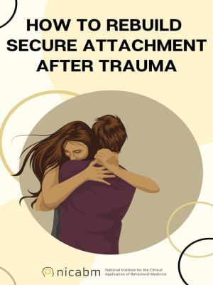

Find counseling services near you.

Advice from trauma recovery experts.
Connect with professionals who understand your journey. You don't have to go through this alone.
Find counseling services near you.
Advice from trauma recovery experts.
Practical steps and resources to help you regain control of your life.
5 Ways to Reclaim Your Power.
Downloadable self-help guide for stress management.
Find peace and rediscover joy through mental health practices.
Guided meditation for calmness.
Start journaling for emotional clarity.
Your physical health is just as important as your emotional well-being.
Find free or low-cost clinics near you.
Health concerns post-violence explained.